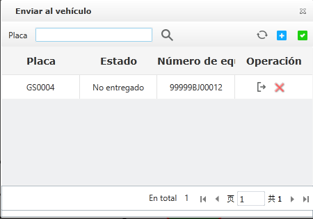

Aplicar valla electrónica.
Aplique una valla electrónica al vehículo. Después de que la aplicación de la valla electrónica sea exitosa, el vehículo informará
la "alerta de entrada / salida " a la plataforma al entrar y salir de la valla electrónica; si el vehículo contraviene la
regla de límite de velocidad en la valla, se informará la alerta de "exceso de velocidad en la valla" a la plataforma de seguridad.
|
1. |
Seleccione una valla electrónica en la lista de información en la interfaz principal de la valla electrónica, haga clic en
el lado derecho 〖 〗 para abrir la ventana “Enviar al vehículo”, como se muestra a continuación. 〗 para abrir la ventana “Enviar al vehículo”, como se muestra a continuación.
Fig 57 Aplique una valla electrónica al vehículo. |
|
2. |
Haga clic〖 〗 para abrir la ventana “Selección del vehículo”. 〗 para abrir la ventana “Selección del vehículo”. |
|
3. |
Seleccione el vehículo La organización expandida marque directamente el vehículo que se seleccionará; también puede ingresar
el número de placa y hacer clic 〖 〗 para marcar el vehículo en el resultado de la consulta. 〗 para marcar el vehículo en el resultado de la consulta.
Sepuede aplicar múltiples vallas electrónicas al mismo vehículo, pero si la valla electrónica se ha aplicado a un vehículo,
entonces este vehículo no aparecerá en la lista de vehículos opcionales.
Fig 58 Vehículo seleccionado |
|
4. |
Haga clic 〖Aceptar〗 y el vehículo seleccionado se agregará a la lista de aplicaciones de vehículos.

Fig 59 Emitir vehículo |
|
5. |
Haga clic 〖 〗 para emitir el comando a todos los vehículos seleccionados; haga clic en el lado derecho del vehículo 〖〗 para enviar un comando respectivamente al vehículo. 〗 para emitir el comando a todos los vehículos seleccionados; haga clic en el lado derecho del vehículo 〖〗 para enviar un comando respectivamente al vehículo.
|
• |
Si emite con éxito, la lista de estado se mostrará como “Con éxito”； |
|
• |
Si la lista de estado se muestra como “Error al enviar”, haga clic 〖〗 para volver a emitir. |
|
|
6. |
(Opcional) Haga clic 〖 〗 para actualizar el estado del vehículo emitido por la valla. Haga clic en el lado derecho del vehículo 〖 〗 para actualizar el estado del vehículo emitido por la valla. Haga clic en el lado derecho del vehículo 〖 〗 para eliminar la asociación de vehículos individuales con la valla electrónica. 〗 para eliminar la asociación de vehículos individuales con la valla electrónica. |
.